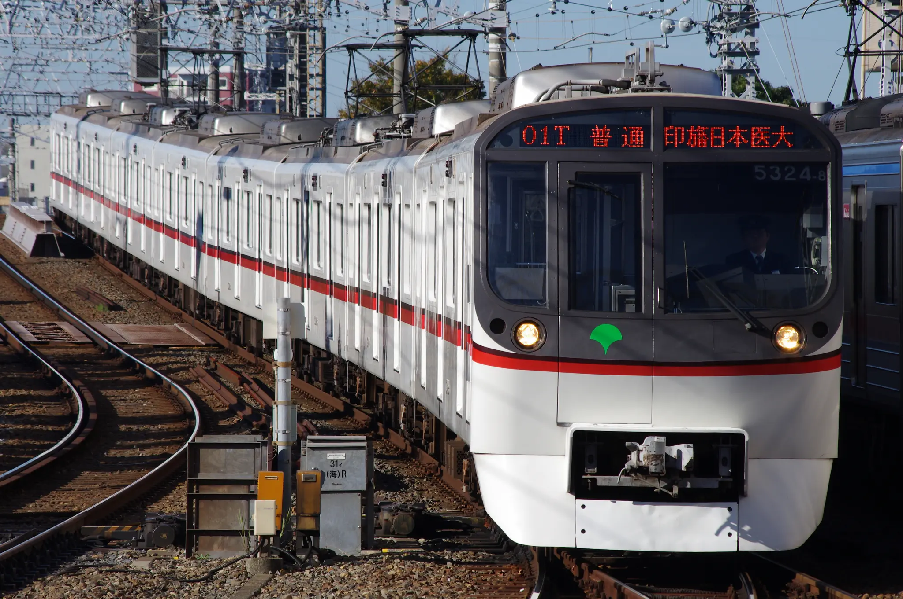

Tweet 東京都交通局5300形 5000形の置き換えを目的として1991年に登場。四直の各路線で幅広く活躍していたが、5500形の導入に伴い2023年に営業運転を終了した。三菱電機製のGTOサイリスタを用いたVVVFインバータが採用されており、独特の爆音を奏でていた。 5303編成 @薬園台-前原 (2015/02/28) 5303編成 @立会川 (2012/03/10) 5310編成 @京成高砂 (2012/01/27) 5313編成 @船橋競馬場-谷津 (2012/08/10) 5315編成 @京成八幡-鬼越 (2013/06/28)5315編成以降は大型のスカートが装着されている。 5317編成 @八広 (2013/04/04) 5323編成 @白井-小室 (2017/03/16)  5324編成 @京成高砂 (2012/11/10) Tweet